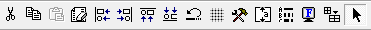

Die Buttons der Formularbearbeitung werden standardmäßig in der Formularbearbeitung angezeigt und sind nicht deaktivierbar.

Folgende Funktionen stehen zur Verfügung:
Ø Ausschneiden
Es werden alle markierten Elemente ausgeschnitten und in die Zwischenablage transferiert.
Ø Kopieren
Es werden alle markierten Elemente kopiert und in die Zwischenablage transferiert.
Ø Einfügen
Es werden alle Elemente aus der Zwischenablage eingefügt.
Ø Löschen
Alle markierten Elemente werden gelöscht.
Ø Linksbündig ausrichten
Durch Anwahl dieser Option werden alle markierten Elemente mit linker Ausrichtung platziert (für diese Funktion müssen mindestens 2 Elemente markiert sein). Die Ausrichtung orientiert sich an dem markierten Element, welches am weitesten links platziert ist.
Ø Rechtsbündig ausrichten
Durch Anwahl dieser Option werden alle markierten Elemente mit rechter Ausrichtung platziert (für diese Funktion müssen mindestens 2 Elemente markiert sein). Die Ausrichtung orientiert sich an dem markierten Element, welches am weitesten rechts platziert ist.
Ø Oben ausrichten
Durch Anwahl dieser Option werden alle markierten Elemente mit Ausrichtung auf eine obere Ebene platziert (für diese Funktion müssen mindestens 2 Elemente markiert sein). Die Ausrichtung orientiert sich am obersten markierten Element.
Ø Unten ausrichten
Durch Anwahl dieser Option werden alle markierten Elemente mit Ausrichtung auf eine untere Ebene platziert (für diese Funktion müssen mindestens 2 Elemente markiert sein). Die Ausrichtung orientiert sich am untersten markierten Element.
Ø Wiederherstellen
Alle nicht gespeicherten Formularänderungen können Änderung für Änderung rückgängig gemacht werden.
Ø Hilfslinien
Aktiviert ein Raster auf dem Bildschirm, welches die genaue Positionierung von Elementen vereinfacht. Ein erneuter Klick auf diesen Menüeintrag deaktiviert das Raster wieder.
Ø Elemente Toolbar
Der Werkzeugkasten stellt verschiedene Elemente bereit, welche auf dem Formular abgelegt werden können. Um ein Element, z.B. eine Variable zu platzieren, muss das entsprechende Symbol aus der Toolbox ausgewählt und dann mit einem Mausklick auf dem Formular abgelegt werden. Danach öffnet sich ein weiteres Fenster, in dem Parameter bestimmt und Formatierungen zugewiesen werden können. Eine genaue Erläuterung der Elemente finden Sie in dem Kapitel "Die Buttonleisten" bzw. "Buttons und Funktionen im Detail".
Ø Seiteneinstellungen
Mit dieser Option können die Seiteneinstellungen des Formulars bearbeitet werden.
Ø Flags
Durch Anwahl des Punkts "Flags" wird der Bereich "Ansichtsebenen" aktiviert bzw. deaktiviert. Mit dieser sogenannten Flag-Toolbox kann gesteuert werden, welche Elemente in einem Formular angezeigt werden sollen, wobei über die Flags auch der Ausdruck der Formulare selbst gesteuert wird.
Ø Bildschirmzeichensatz
Schaltet zwischen der Anzeige mit Bildschirmschriftarten und Druckerschriftarten um.
Ø Basisraster vergrößern
Vergrößert die Bildschirmanzeige des Formulars auf die Seitenbreite, die der Bildschirm darstellen kann.
Ø Zeiger
Aktiviert den Zeiger zur Auswahl und Markierung von Komponenten auf dem Formular.